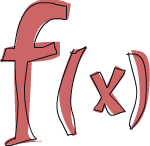

簡介
關於這份教學
歡迎來到 Haskell 趣學指南！會想看這篇文章表示你對學習 Haskell 有很大的興趣。你來對地方了，來讓我簡單介紹一下這個教學。
撰寫這份教學，一方面是讓我自己對 Haskell 更熟練，另一方面是希望能夠分享我的學習經驗，幫助初學者更快進入狀況。網路上已經有無數 Haskell 的教學文件，在我學習的過程中，我並不限於只參考一份來源。我常常閱讀不同的教學文章，他們每個都從不同的角度出發。參考這些資源讓我能將知識化整為零。這份教學是希望提供更多的機會能讓你找到你想要得到的解答。

這份教學主要針對已經有使用命令式程式語言 (imperative programming languages) 寫程式經驗 (C, C++, Java, Python …) 、卻未曾接觸過函數式程式語言 (functional programming languages) (Haskell, ML, OCaml …) 的讀者。就算沒有寫程式經驗也沒關係，會想學 Haskell 的人我相信都是很聰明的。
若在學習中遇到什麼地方不懂的，Freenode IRC 上的 #Haskell 頻道是提問的絕佳去處。那裡的人都很友善，有耐心且能體諒初學者。 (譯註： Stackoverflow 上的 #haskell tag 也有很多 Haskell 神人們耐心地回答問題，提供給不習慣用 IRC 的人的另一個選擇。)
我經歷了不少挫折才學會 Haskell，在初學的時候它看起來是如此奇怪的語言。但有一天我突然開竅了，之後的學習便如魚得水。我想要表達的是：儘管 Haskell 乍看下如此地詭異，但假如你對程式設計十分有興趣，他非常值得你學習。學習 Haskell 讓你想起你第一次寫程式的感覺。非常有趣，而且強迫你 Think different。
什麼是 Haskell？

Haskell 與其他語言不同，是一門純粹函數式程式語言 (purely functional programming language)。在一般常見的命令式語言中，要執行操作的話是給電腦一組命令，而狀態會隨著命令的執行而改變。例如你指派變數 a 的值為 5，而隨後做了其它一些事情之後 a 就可能變成的其它值。有控制流程 (control flow)，你就可以重複執行操作。然而在純粹函數式程式語言中，你不是像命令式語言那樣命令電腦「要做什麼」，而是通過用函數來描述出問題「是什麼」，如「階乘是指從1到某個數的乘積」，「一個串列中數字的和」是指把第一個數字跟剩餘數字的和相加。你用宣告函數是什麼的形式來寫程式。另外，變數 (variable) 一旦被指定，就不可以更改了，你已經說了 a 就是 5，就不能再另說 a 是別的什麼數。（譯註：其實用 variable 來表達造成字義的 overloading，會讓人聯想到 imperative languages 中 variable 是代表狀態，但在 functional languages 中 variable 是相近於數學中使用的 variable。x=5 代表 x 就是 5，不是說 x 在 5 這個狀態。) 所以說，在純粹函數式程式語言中的函數能做的唯一事情就是利用引數計算結果，不會產生所謂的"副作用 (side effect)" (譯註：也就是改變非函數內部的狀態，像是 imperative languages 裡面動到 global variable 就是 side effect)。一開始會覺得這限制很大，不過這也是他的優點所在：若以同樣的參數呼叫同一個函數兩次，得到的結果一定是相同。這被稱作“引用透明 (Referential Transparency)_” (譯註：這就跟數學上函數的使用一樣)。如此一來編譯器就可以理解程式的行為，你也很容易就能驗證一個函數的正確性，繼而可以將一些簡單的函數組合成更複雜的函數。

Haskell 是惰性 (lazy) 的。也就是說若非特殊指明，函數在真正需要結果以前不會被求值。再加上引用透明，你就可以把程式僅看作是數據的一系列變形。如此一來就有了很多有趣的特性，如無限長度的資料結構。假設你有一個 List: xs = [1,2,3,4,5,6,7,8]，還有一個函數 doubleMe，它可以將一個 List 中的所有元素都乘以二，返回一個新的 List。若是在命令式語言中，把一個 List 乘以 8，執行 doubleMe(doubleMe(doubleMe(xs)))，得遍歷三遍 xs 才會得到結果。而在惰性語言中，調用 doubleMe 時並不會立即求值，它會說“嗯嗯，待會兒再做！”。不過一旦要看結果，第一個 doubleMe 就會對第二個說“給我結果，快！”第二個 doubleMe 就會把同樣的話傳給第三個 doubleMe，第三個 doubleMe 只能將 1 乘以 2 得 2 後交給第二個，第二個再乘以 2 得 4 交給第一個，最終得到第一個元素 8。也就是說，這一切只需要遍歷一次 list 即可，而且僅在你真正需要結果時才會執行。惰性語言中的計算只是一組初始數據和變換公式。

Haskell 是靜態類型 (statically typed) 的。當你編譯程式時，編譯器需要明確哪個是數字，哪個是字串。這就意味着很大一部分錯誤都可以在編譯時被發現，若試圖將一個數字和字串相加，編譯器就會報錯。Haskell 擁有一套強大的類型系統，支持自動類型推導 (type inference)。這一來你就不需要在每段程式碼上都標明它的類型，像計算 a=5+4，你就不需另告訴編譯器“ a 是一個數值”，它可以自己推導出來。類型推導可以讓你的程式更加簡練。假設有個函數是將兩個數值相加，你不需要聲明其類型，這個函數可以對一切可以相加的值進行計算。
Haskell 採納了很多高階程式語言的概念，因而它的程式碼優雅且簡練。與同層次的命令式語言相比，Haskell 的程式碼往往會更短，更短就意味着更容易理解，bug 也就更少。
Haskell 這語言是一群非常聰明的人設計的 (他們每個人都有 PhD 學位)。最初的工作始於 1987 年，一群學者聚在一起想設計一個屌到爆的程式語言。到了 2003 年，他們公開了 Haskell Report，這份報告描述了 Haskell 語言的一個穩定版本。(譯註：這份報告是 Haskell 98 標準的修訂版，Haskell 98 是在 1999 年公開的，是目前 Haskell 各個編譯器實現預設支援的標準。在 2010 年又公開了另一份 Haskell 2010 標準，詳情可見穆信成老師所撰寫的簡介。
要使用 Haskell 有哪些要求呢？
一句話版本的答案是：你只需要一個編輯器和一個編譯器。在這裡我們不會對編輯器多加著墨，你可以用任何你喜歡的編輯器。至於編譯器，在這份教學中我們會使用目前最流行的版本：GHC。而安裝 GHC 最方便的方法就是去下載 Haskell Platform，他包含了許多現成 Runtime Library 讓你方便寫程式。(譯註：Ubuntu 的使用者有現成的套件可以使用，可以直接 apt-get install Haskell-platform 來安裝。但套件的版本有可能比較舊。)
GHC 可以解釋執行 Haskell Script （通常是以 .hs 作為結尾），也可以編譯。它還有個互動模式，你可以在裡面呼叫 Script 裡定義的函數，即時得到結果。 對於學習而言，這比每次修改都編譯執行要方便的多。想進入互動模式，只要打開控制台輸入 ghci 即可。假設你在 myfunctions.hs 裡定義了一些函數，在 ghci 中輸入 :l myfunctions.hs，ghci 便會載入 myfunctions.hs。之後你便可以呼叫你定義的函數。一旦修改了這個 .hs 檔案的內容，再次執行 :l myfunctions.hs 或者相同作用的 :r ，都可以重新載入該檔案。我自己通常就是在 .hs 檔案中定義幾個函數，再到 ghci 載入，呼叫看看，再修改再重新載入。這也正是我們往後的基本流程。